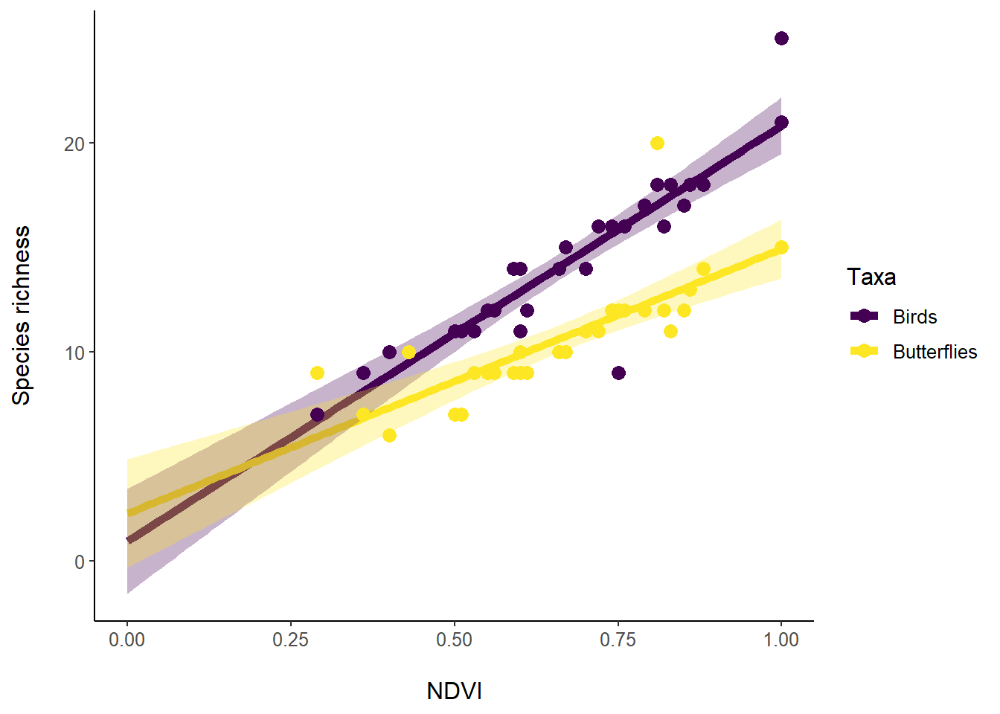

Session 2 Introduction to the tidyverse
Load required packages
library(tidyverse)
library(viridis) #preferred color palette for graphing## Loading required package: viridisLiteImport bird data.
The data provides information on the species richness of birds and butterflies and NDVI at 30 sites. Our goal is to run a linear model that estimates the magnitude, direction, and uncertainty in the species richness-NDVI relationship for each taxa and then visualize the relationship.
data.all<-read_csv("data/data.richard.new.csv")## New names:
## * `` -> ...1## Rows: 60 Columns: 5## -- Column specification -------------------------------
## Delimiter: ","
## chr (2): Site, Taxa
## dbl (3): ...1, NDVI, Richness##
## i Use `spec()` to retrieve the full column specification for this data.
## i Specify the column types or set `show_col_types = FALSE` to quiet this message.data.all## # A tibble: 60 x 5
## ...1 Site NDVI Taxa Richness
## <dbl> <chr> <dbl> <chr> <dbl>
## 1 1 Site.1 0.66 Birds 14
## 2 2 Site.2 0.4 Birds 10
## 3 3 Site.3 0.36 Birds 9
## 4 4 Site.4 0.82 Birds 16
## 5 5 Site.5 0.55 Birds 12
## 6 6 Site.6 0.29 Birds 7
## 7 7 Site.7 0.51 Birds 11
## 8 8 Site.8 0.74 Birds 16
## 9 9 Site.9 1 Birds 25
## 10 10 Site.10 0.76 Birds 16
## # ... with 50 more rowsThe old way is to run a model on each taxa separately:
model.birds<-lm(Richness~NDVI, data=data.all[data.all$Taxa=="Birds",]) #subset the Birds data
model.butterflies<-lm(Richness~NDVI, data=data.all[data.all$Taxa=="Butterflies",]) #subset the ButterfliesExtracting results from the summary file is not easy.
key.results.birds<-as.data.frame(summary(model.birds)[[4]]) #You have to remember that subscript [[4]] corresponds to the main resultsThe broom package presents model results in a tidy way.
library(broom)broom::tidy() returns parameter estimates.
birds.tidy<-model.birds%>%tidy()
birds.tidy## # A tibble: 2 x 5
## term estimate std.error statistic p.value
## <chr> <dbl> <dbl> <dbl> <dbl>
## 1 (Intercept) 0.952 1.22 0.780 4.42e- 1
## 2 NDVI 19.9 1.77 11.2 6.75e-12broom::glance() includes R2, AIC, and more.
birds.glance<-model.birds%>%glance()
birds.glance## # A tibble: 1 x 12
## r.squared adj.r.squared sigma statistic p.value
## <dbl> <dbl> <dbl> <dbl> <dbl>
## 1 0.819 0.812 1.70 127. 6.75e-12
## # ... with 7 more variables: df <dbl>, logLik <dbl>,
## # AIC <dbl>, BIC <dbl>, deviance <dbl>,
## # df.residual <int>, nobs <int>broom::augment() returns fitted values
birds.augment<-model.birds%>%augment()
birds.augment## # A tibble: 30 x 8
## Richness NDVI .fitted .resid .hat .sigma .cooksd
## <dbl> <dbl> <dbl> <dbl> <dbl> <dbl> <dbl>
## 1 14 0.66 14.1 -0.0743 0.0334 1.73 3.41e-5
## 2 10 0.4 8.91 1.09 0.111 1.72 2.90e-2
## 3 9 0.36 8.11 0.890 0.136 1.72 2.49e-2
## 4 16 0.82 17.3 -1.26 0.0583 1.71 1.79e-2
## 5 12 0.55 11.9 0.113 0.0484 1.73 1.17e-4
## 6 7 0.29 6.72 0.282 0.188 1.73 3.90e-3
## 7 11 0.51 11.1 -0.0920 0.0603 1.73 9.98e-5
## 8 16 0.74 15.7 0.335 0.0389 1.73 8.18e-4
## 9 25 1 20.8 4.17 0.152 1.50 6.35e-1
## 10 16 0.76 16.1 -0.0625 0.0425 1.73 3.12e-5
## # ... with 20 more rows, and 1 more variable:
## # .std.resid <dbl>To run models or implement any function on the different groups within a data frame, one must master tidyr::nest() and purrr::map().
nest() creates a list of data frames with each corresponding to a different group.
Example: create a data frame for each taxa.
data.taxa<-data.all%>%group_by(Taxa)%>%nest()
data.taxa## # A tibble: 2 x 2
## # Groups: Taxa [2]
## Taxa data
## <chr> <list>
## 1 Birds <tibble [30 x 4]>
## 2 Butterflies <tibble [30 x 4]>The grouping variable is left out of the nested data frame. All other data is now in a separate data frame, nested with the whole data frame.
You can inspect what lies behind the “data” column by using unnest() to display the original data.
data.original.birds<-data.taxa%>%ungroup()%>%slice(n=1)%>%unnest(data) #slice(n=1) means extract the first row of the data.taxa data frame.
data.original.birds## # A tibble: 30 x 5
## Taxa ...1 Site NDVI Richness
## <chr> <dbl> <chr> <dbl> <dbl>
## 1 Birds 1 Site.1 0.66 14
## 2 Birds 2 Site.2 0.4 10
## 3 Birds 3 Site.3 0.36 9
## 4 Birds 4 Site.4 0.82 16
## 5 Birds 5 Site.5 0.55 12
## 6 Birds 6 Site.6 0.29 7
## 7 Birds 7 Site.7 0.51 11
## 8 Birds 8 Site.8 0.74 16
## 9 Birds 9 Site.9 1 25
## 10 Birds 10 Site.10 0.76 16
## # ... with 20 more rowsmap() applies a function to each nested data frame.
Example: find the mean number of species of each taxa
mean.taxa<-data.all%>%group_by(Taxa)%>%nest()%>%mutate(mean.Richness=map(data, function(x)mean(x%>%pull(Richness)))) #map indicates the data frame column with the nested data (i.e., data) and applies a function to that data.
#data becomes the "x" in the function.
#pull() extracts the variable of interest and returns a vector.
mean.taxa## # A tibble: 2 x 3
## # Groups: Taxa [2]
## Taxa data mean.Richness
## <chr> <list> <list>
## 1 Birds <tibble [30 x 4]> <dbl [1]>
## 2 Butterflies <tibble [30 x 4]> <dbl [1]>The results are mutated as another list column in the original data frame. They can be unnested.
mean.taxa<-data.all%>%group_by(Taxa)%>%nest()%>%mutate(mean.Richness=map(data, function(x)mean(x%>%pull(Richness))))%>%unnest(mean.Richness)
mean.taxa## # A tibble: 2 x 3
## # Groups: Taxa [2]
## Taxa data mean.Richness
## <chr> <list> <dbl>
## 1 Birds <tibble [30 x 4]> 14.2
## 2 Butterflies <tibble [30 x 4]> 10.7More complicated functions are easier to specify outside of the pipe.
Example: find the sites with the highest and lowest bird and butterfly species richness
get.sites<-function(x){ #Each element of the list column data will correspond to data frame "x" in the function.
x%>%filter(Richness%in%c(max(Richness), min(Richness)))%>%mutate(Type=ifelse(Richness==max(Richness), "High", "Low"))%>%arrange(desc(Richness))
}
sites.taxa<-data.all%>%group_by(Taxa)%>%nest()%>%mutate(Types=map(data, get.sites))%>%unnest(Types)%>%select(-data) #The function get.sites is applied to each element in the list column data.
sites.taxa## # A tibble: 4 x 6
## # Groups: Taxa [2]
## Taxa ...1 Site NDVI Richness Type
## <chr> <dbl> <chr> <dbl> <dbl> <chr>
## 1 Birds 9 Site.9 1 25 High
## 2 Birds 6 Site.6 0.29 7 Low
## 3 Butterflies 48 Site.18 0.81 20 High
## 4 Butterflies 32 Site.2 0.4 6 LowAnother example, this time nesting the data based on sites and finding whether a site has more bird or butterfly species.
get.taxa<-function(x){
Top.taxa<-x%>%filter(Richness==max(Richness))%>%pull(Taxa)
if(length(Top.taxa)>1){paste(Top.taxa[1], Top.taxa[2], sep=" + ")}else{Top.taxa} #Need to indicate sites where birds and butterflies have the same species richness
}
sites.richness<-data.all%>%group_by(Site)%>%nest()%>%mutate(Animal=map(data, get.taxa))%>%unnest(Animal)%>%select(-data)
sites.richness## # A tibble: 30 x 2
## # Groups: Site [30]
## Site Animal
## <chr> <chr>
## 1 Site.1 Birds
## 2 Site.2 Birds
## 3 Site.3 Birds
## 4 Site.4 Birds
## 5 Site.5 Birds
## 6 Site.6 Butterflies
## 7 Site.7 Birds
## 8 Site.8 Birds
## 9 Site.9 Birds
## 10 Site.10 Birds
## # ... with 20 more rowsAre there any sites where birds and butterflies have equal species richness?
site.animals<-sites.richness%>%filter(Animal=="Birds + Butterflies")
site.animals## # A tibble: 1 x 2
## # Groups: Site [1]
## Site Animal
## <chr> <chr>
## 1 Site.25 Birds + ButterfliesAre there more sites with higher bird or butterfly species richness?
richness.summary<-sites.richness%>%group_by(Animal)%>%summarize(No.Sites=n())
richness.summary## # A tibble: 3 x 2
## Animal No.Sites
## <chr> <int>
## 1 Birds 26
## 2 Birds + Butterflies 1
## 3 Butterflies 3Run a linear model to estimate the relationship between NDVI and richness for each taxa. “lm” can be specified as a function in map(). The model is mutated as a list column. We can mutate all model results by mapping tidy, glance, and augument onto each model.
richness.models<-data.all%>%group_by(Taxa)%>%nest()%>%mutate(Models=map(data, ~lm(Richness~NDVI, data=.)))%>%mutate(Tidied=map(Models, tidy), Glanced=map(Models, glance), Augmented=map(Models, augment))
richness.models## # A tibble: 2 x 6
## # Groups: Taxa [2]
## Taxa data Models Tidied Glanced Augmented
## <chr> <list> <list> <list> <list> <list>
## 1 Birds <tibbl~ <lm> <tibbl~ <tibble~ <tibble ~
## 2 Butterflies <tibbl~ <lm> <tibbl~ <tibble~ <tibble ~Is NDVI more strongly associated with bird or butterfly species richness? Let’s compare the parameter estimates and their precision, which can be returned as a 95% confidence interval by specifying conf.int=TRUE and conf.level=0.95 (the default).
richness.models<-data.all%>%group_by(Taxa)%>%nest()%>%mutate(Models=map(data, ~lm(Richness~NDVI, data=.)))%>%mutate(Tidied=map(Models, tidy, conf.int=TRUE), Glanced=map(Models, glance), Augmented=map(Models, augment))%>%unnest(Tidied)
parameter.estimates<-richness.models%>%select(Taxa, term, estimate, conf.low, conf.high)%>%filter(term=="NDVI")
parameter.estimates## # A tibble: 2 x 5
## # Groups: Taxa [2]
## Taxa term estimate conf.low conf.high
## <chr> <chr> <dbl> <dbl> <dbl>
## 1 Birds NDVI 19.9 16.3 23.5
## 2 Butterflies NDVI 12.7 8.91 16.4Graph the results: compare the relationship with NDVI for both species. Rather than use the fitted values, predict richness for all NDVI values from 0 to 1 at intervals of 0.01. The precision of the prediction can be estimated as confidence intervals (interval=“confidence”) or prediction intervals (interval=“prediction”)
richness.models<-data.all%>%group_by(Taxa)%>%nest()%>%mutate(Models=map(data, ~lm(Richness~NDVI, data=.)))%>%mutate(Tidied=map(Models, tidy, conf.int=TRUE), Glanced=map(Models, glance), Predictions=map(Models, augment, newdata=tibble(NDVI=seq(0,1,0.01)), se_fit=TRUE, interval="confidence")) #Rather than use the original NDVI values for prediction, specify a new data frame (newdata) with the NDVI values of interest
richness.predictions<-richness.models%>%unnest(Predictions)%>%select(Taxa, NDVI, .fitted, .lower, .upper)%>%rename(Richness=.fitted, low.95=.lower, high.95=.upper)
p<-ggplot(richness.predictions,aes(x=NDVI, y=Richness, col=Taxa)) + geom_line(size=2)
p<-p+geom_ribbon(aes(ymin=low.95, ymax=high.95, fill=Taxa),
show.legend=FALSE, color=NA, alpha=0.3) #Visualize confidence interval
p<-p+geom_point(data=data.all, aes(x=NDVI, y=Richness, col=Taxa), size=3) #Add original data
p<-p+scale_y_continuous(name="Species richness\n")
p<-p+scale_x_continuous(name="\nNDVI")
p<-p+scale_color_viridis_d()
p<-p+scale_fill_viridis_d()
p<-p+theme_classic()+ theme(axis.line.x=element_line(colour="black"), axis.line.y=element_line(colour="black"),
text = element_text(size=12))
p
ggsave("Richness_vs_NDVI.pdf", device="pdf", width=6, height=3, units="in", dpi=600)